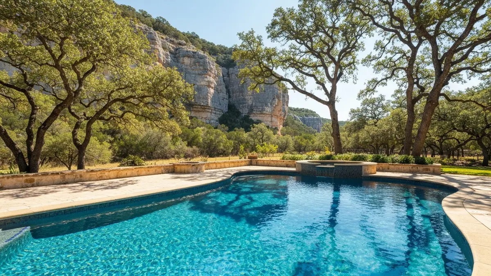

Boerne is the heart of Texas Hill Country living, a charming city of about 20,000 nestled along Cibolo Creek northwest of San Antonio. Known for its Main Street boutiques, Berges Fest German heritage celebrations, and scenic limestone landscapes, Boerne attracts homeowners who value quality and aesthetics. Luxury homes with custom pools are a hallmark of communities like Cordillera Ranch, Fair Oaks Ranch, and The Highlands. These pools often feature freeform designs, spa spillovers, and natural stone surrounds that demand a resurfacing team experienced with high-end finishes. The Edwards Plateau limestone geology produces exceptionally hard water that takes a toll on pool surfaces over time. Alamo Pool Resurfacing brings Hill Country expertise to every Boerne project, delivering finishes that complement your home and withstand the local water chemistry.

Our Pool Resurfacing Process
- Free On-Site Estimate — We visit your Boerne property to inspect the pool surface and discuss options.
- Surface Preparation — We drain and prep the pool, removing old plaster and cleaning to bare shell.
- Material Selection — Choose from plaster, pebble, quartz, or glass bead finishes.
- Expert Application — Our team applies the new surface with precision for a smooth, durable finish.
- Fill, Balance & Startup — We refill, balance water chemistry, and guide you through the curing process.
Why Boerne Homeowners Trust Alamo Pool Resurfacing
- Custom Pool Experience — Boerne pools are often unique designs with spas, water features, and natural stone. We have the skill to resurface complex builds with precision.
- Licensed, Bonded & Insured — Full licensing and insurance coverage for every project in Kendall County and surrounding areas.
- Hard Water Solutions — We specialize in finishes that resist the heavy calcium scale caused by Edwards Plateau limestone water, keeping your pool beautiful longer.
- Premium Finish Selection — From PebbleTec to glass bead surfaces, we offer the high-end options Boerne homeowners expect for their luxury properties.

Frequently Asked Questions — Pool Resurfacing in Boerne
How much does pool resurfacing cost in Boerne?
Pool resurfacing in Boerne typically ranges from $4,000 to $14,000. Standard plaster starts around $4,000, quartz aggregate runs $6,000 to $9,000, and premium pebble finishes cost $8,000 to $14,000. Boerne pools tend to be larger custom builds, which increases material costs. We provide free on-site estimates tailored to your specific pool.
Does Boerne's limestone geology affect pool surfaces?
Yes. Boerne sits on the Edwards Plateau where limestone bedrock produces very hard, calcium-rich water. This mineral content accelerates scale deposits and etching on standard plaster surfaces. We recommend quartz or pebble aggregate finishes for Boerne pools because they resist scale buildup and maintain their appearance far longer in hard water conditions, often lasting 15 to 25 years.
Can you match my Boerne pool's custom design during resurfacing?
Absolutely. Many Boerne homes feature custom pool designs with spa spillovers, natural stone coping, and integrated water features. Our team has experience resurfacing pools of every shape and complexity. We offer a wide selection of colors and finishes including pebble, quartz, and glass bead options that complement Hill Country landscaping and architectural styles.
Need Pool Resurfacing in Boerne? Call Now
We're your local pool resurfacing experts serving Boerne and all surrounding areas.
📞 Call (726) 268-5597